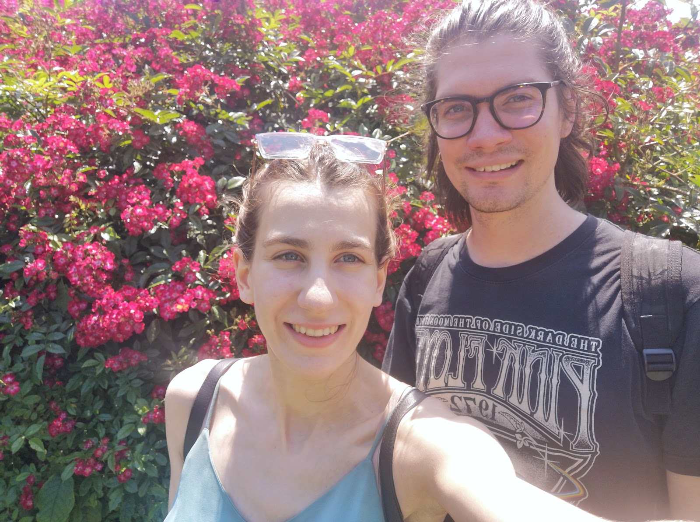

Időpont: 2024.06.07.
Helyszín: Rosinante fogadó, Szigetmonostor
Esküvői menetrend
15:00 Vendégek érkezése és szobák elfoglalása
16:00 Ceremónia
19:00 Vacsora
Helyszín megközelítése
Autóval a tahitótfalui hídon keresztül lehet átjutni a Szentendrei-szigetre, ez Budapest belvárosából kb. 45 perc.
Tömegközlekedéssel leggyorsabban a szentendrei Pásztor révvel lehet átjutni a szigetre, így Budapest belvárosából kb. 80 perc az út. A pontos érkezéshez a 14:35-kor induló kompot ajánljuk.